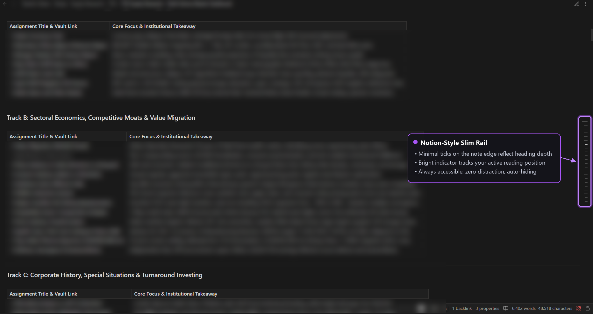
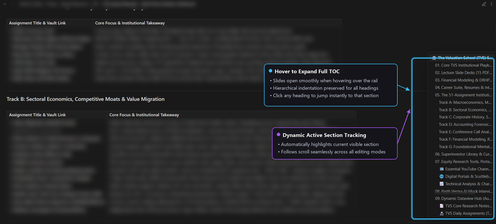

A slim, zero-distraction tick rail on the right edge of every note that dynamically tracks reading position and expands into an indented outline on hover.
Every complex note deserves an effortlessly accessible table of contents. Traditional TOC blocks take up vertical screen space, require continuous manual syntax maintenance, and interrupt your visual focus. Notion TOC solves this by placing a subtle rail on the note boundary.
As you scroll through your documents, the indicator automatically calculates your viewport position and illuminates the active heading in real-time.
Analyzing long-term value shifts across emerging infrastructure. In this section, multi-tiered outlines indent dynamically, adapting to headings without creating unsightly visual gaps when skipped levels occur.
Evaluating operating margins, customer acquisition dynamics, and retention moats across multi-year cycles. Everything is updated seamlessly as you type in Source mode, Live Preview, or Reading view.
Examining capital intensity, pricing power, and competitive advantages across industries. The slim rail remains accessible without obstructing sidebars or default scrollbars.
Firms capable of passing input cost fluctuations without sacrificing market share maintain superior compounding returns.
Implementation guidelines, portfolio rebalancing schedules, and risk governance thresholds.
Clean, unobtrusive, and purpose-built for high-volume knowledge workers.

Rests gracefully on the right note margin without cluttering your editing canvas. Ticks visually encode heading depth.

Slides open effortlessly on hover. Click any heading to jump instantly, with full active-section tracking.
Engineered to feel like a native Obsidian core feature.
Built with plain JavaScript and zero heavy external libraries. Hooked into Obsidian's internal MetadataCache for lightning-fast responsiveness.
Dynamic coordinate tracking ensures that whichever section is currently on your screen remains highlighted on both the rail and the sidebar.
Handles arbitrary heading jumps cleanly. Skipped heading levels (like H1 straight to H3) are indented logically without broken gaps.
Powered entirely by native Obsidian CSS variables. Matches your dark mode, light mode, and custom community themes out of the box.
Tap the rail ticks on iOS and Android to open the outline overlay; tap anywhere outside to dismiss smoothly.
Automatically hides itself during PDF exports and print workflows so your published documents stay pristine.
Choose your preferred installation method below.
Using the Obsidian42 - BRAT community plugin allows one-click installation and automatic updates:
BRAT: Add a beta plugin for testing.Download the release files and place them in your vault's plugins directory:
manifest.json, main.js, and styles.css from Latest Releases..obsidian/plugins/notion-toc/.